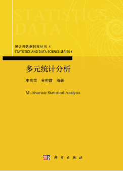
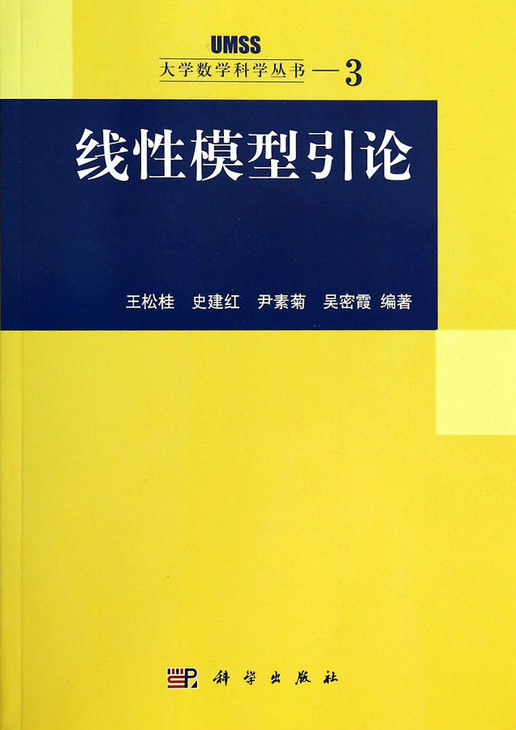

| [6] 吴密霞, 王松桂, 《线性模型引论》第二版, 科学出版社(大学数学科学丛书), 2024.11. | |
| [5] 李高荣, 吴密霞, 《多元统计分析》, 科学出版社（统计与数据科学系列）, 2021.9. (2023年被评为北京市优质本科教材课件) | |
| [4] 吴密霞, 刘春玲, 《多元统计分析》, 科学出版社, 2014.6. | |
| [3] 吴密霞, 《线性混合效应模型引论》, 科学出版社, 2013.1. | |
| [2] 王松桂, 吴密霞, 贾忠贞, 《矩阵不等式》(第二版), 科学出版社(大学数学科学丛书), 2006.6. | |
| [1] 王松桂, 史建红, 尹素菊, 吴密霞, 《线性模型引论》, 科学出版社(大学数学科学丛书), 2004.5. | |
|   |
[57] Xirui Liu, Mixia Wu, Bangshu Liu, Communication-efficient estimation for non-randomly distributed missing data,
Journal of Systems Science and Complexity, 2025 (in press).
[56] Yang Li, Qijing Yan, Mixia Wu, Aiyi Liu, Bootstrap-based inference for multiple variance changepoint models,
Journal of Applied Statistics, 2025 (online).
[55] 李扬, 吴密霞*, 基于加权Bootstrap方法的交通流多变点实证分析, 数理统计与管理, 2025 (in press).
[54] Lingling Tian, Chuanhua Wei, Mixia Wu,
Statistical inference of partially linear time-varying coefficients spatial autoregressive panel data model,
Spatial Statistics, 2025, 65: 100887.
[53] Guowang Luo, Mixia Wu,
Bias-corrected instrumental variable estimation for spatial autoregressive models with measurement errors,
Spatial Statistics, 2025, 65: 100878.
[52] Yang Li, Mixia Wu* and Wenxing Ding,
Bootstrap-based inference for multiple mean -variance changepoint models,
Journal of Statistical Computation and Simulation, 2025, 95(1): 70-95.
[51] Xirui Liu, Mixia Wu*, Liwen Xu,
Communication-efficient distributed EM algorithm,
Statistical Paper, 2024, 65: 5575-5592.
[50] Xiaoyu Zhang, Mixia Wu*, Colin O. Wu,
Dynamic copula-based nonparametric estimation of rank-tracking probabilities with longitudinal data,
Statistica Sinica, 2024,34(2): 889-909.
[49] Xin Yang, Qijing Yan, Mixia Wu*,
Adaptive distributed inference for multi-source massive heterogeneous Data,
Acta Mathematica Sinica, English Series, 2024, 40(11): 2751–2770.
[48] Mixia Wu*, Xian Sun, Aiyi Liu, Chenchen Peng, Zhaohai Li,
Significance tests for covariates in the diagnostic accuracy index of a biomarker against a continuous gold standard,
Statistics in Medicine, 2023, 42(22): 4015-4027.
[47] Xiaoyu Zhang, Mixia Wu*, Colin O. Wu,
Dynamic copula-based methods for estimating rank-tracking probabilities with longitudinal data,
Stat, 2023.12(1): e554.
[46] Xin Yang, Qijing Yan, Mixia Wu*,
Model checking for parametric single-index models with massive datasets,
Journal of Statistical Planning and Inference, 2023, 227: 129-145.
[45] 马万霞, 吴密霞*, 罗国旺,
缺失数据下半参数空间自回归模型的估计, 数学学报, 2023, 66(6): 1031-1044.
[44] 杨鑫, 吴密霞*,
多源异质大数据线性模型的分布式统计推断, 数学学报, 2023, 66 (2): 263-276.
[43] Guowang, Luo, Mixia Wu*, Zhen Pang,
Estimation of spatial autoregressive models with covariate measurement error,
Journal of Multivariate Analysis, 2022,192: 105093.
[42] Guowang Luo, Mixia Wu*,
Statistical inference for semiparametric varying-coefficient spatial autoregressive models under restricted conditions,
Communications in Statistics-Simulation and Computation, 2022, 51(5): 2268-2286.
[41] 李扬, 吴密霞*, 胡尧, 杨超, 基于筛选排序算法的多均值变点估计, 工程数学学报, 2022, 39(3): 401-412.
[40] Chenchen Peng, Mixia Wu, Kaiyuan Liu,
Multiple levels perceptual noise backed visual information fidelity for picture quality
assessment,
2022 International Symposium on Intelligent Signal Processing and Communication Systems (ISPACS), 2022.
[39] Mixia Wu*, Xiaoyu Zhang, Wei Zhang, Xu Zhang, Aiyi Liu,
Error-corrected estimation of a diagnostic accuracy index of a biomarker against a continuous reference gold standard,
Statistics in Medicine, 2021, 40(4): 1034-1058.
[38] Guowang Luo, Mixia Wu*, Zhen Pang,
Empirical likelihood inference for semiparametric varying-coefficient spatial autoregressive models,
Journal of Systems Science and Complexity, 2021, 34: 2310-2333.
[37] Guowang, Luo, Mixia Wu*, Liwen Xu,
IPW-based robust estimation of the SAR model with missing data,
Statistics and Probability Letter, 2021,172: 109065.
[36] Guowang, Luo, Mixia Wu*,
Variable selection for semiparametric varying-coefficient spatial autoregressive models with
a diverging number of parameters, Communications in Statistics-Theory and Method, 2021, 50(9): 2062-2079.
[35] Guowang, Luo, Mixia Wu*, Zhen Pang,
Estimation of semiparametric varying-coefficient spatial autoregressive models with missing in the dependent variable,
Journal of the Korean Statistical Society, 2020, 49(4): 1148-1172.
[36] 罗国旺，吴密霞*,
部分线性可加空间自回归模型在约束条件下的统计推断,
数理统计与管理, 2020, 39(6): 1000-1009.
[33] Jing Zhao, Mixia Wu, Weihu Cheng, Yaohua Rong, Yuping Hu,
Tests for p-regression coefficients in linear panel model when p is divergent,
Acta Mathematicae Applicatae Sinica, English Series, 2020, 36(3): 566-580.
[32] Bing Sun, Mi-Xia Wu,
Optimal boundary control of a continuum model for a highly re-entrant
manufacturing system, Transactions of the Institute of Measurement and Control, 2019, 41(5): 1373-1382.
[31] Jing Zhao, Weihu Cheng, Haiqing Chen, Mixia Wu,
Comparisons of several Pareto distributions based on record values,
Communications in Statistics-Theory and Methods, 2018 47(10): 2456-2468.
[30] Xiaonan Zhu, Baokun Li, Mixia Wu, Tonghui Wang,
Plausibility Regions on Parameters of the Skew Normal Distribution Based on Inferential Models,
Predictive Econometrics and Big Data, Springer International Publishing AG, 11 th International Conference of the Thailand Econometric Society (TES2018) , 2018, 287-302.
[29] Mixia Wu*, Ye Tian, Aiyi Liu,
The robust inference in linear mixed model with skew normal-symmetric error,
Frontiers of Mathematics in China, 2017, 12(6): 1483-1500.
[28] Mixia Wu*, Jing Zhao, Tonghui Wang, Yan Zhao,
The ANOVA-type inference in linear mixed model with skew-normal error,
Journal of Systems Science and Complexity, 2017, 30: 710-720.
[27] Bing Sun, Mi-Xia Wu,
Optimal boundary control of a coupled system consists of
Kuramoto-Sivashinsky-Korteweg-de Vries and heat equations, Transactions of the Institute of Measurement and Control, 39(12)(2017), 1829-1840.
[26] Mixia Wu*, Diancheng Zhang, Aiyi Liu,
Estimation of diagnostic accuracy of a biomarker compared to a continuous gold standard measured the error,
Journal of Biopharmaceutical Statistics, 2016, 26(6): 1111–1117.
[25] Mixia Wu, Yu Shu, Zhaohai Li, Aiyi Liu,
Repeated significance tests of linear combinations of sensitivity and specificity of a diagnostic biomarker,
Statistics in Medicine, 2016, 35: 3397–3412.
[24] Liwen Xu, Kaiyi Qu, Mixia Wu, Bo Mei, Ranran Chen,
Parametric bootstrap tests for unbalanced three-factor nested designs under heteroscedasticity,
Communications in Statistics-Simulation and Computation, 2016, 45(1): 322-338.
[23] Weizhong Tian, Cong Wang, Mixia Wu, Tonghui Wang,
The Multivariate extended skew Normal distribution and its quadratic forms,
Causal Inference in Econometrics (editors：Van-Nam Huynh, Vladik Kreinovich, Songsak Sriboonchitta), Studies in Computational Intelligence, Volume 622, Springer International Publishing, 2016, 153-169.
[22] Colin Wu, Xin Tian, Kai Fun Yu, Mixia Wu,
Chapter 29：Nonparametric regression models for the analysis of longitudinal data,
Advanced Medical Statistics（editors：Ying Lu, Jiqian Fang,Tian Lu, Hua Jin), World Scientific Publishing, 2015, 1031-1124.
[21] 伍欧, 田欣, 余启汾, 吴密霞, 第29章：纵向数据分析的回归模型, 《纵向数据分析的回归模型》(方积乾, 陆盈主编), 人民卫生出版社, 2015, 663-719.
[20] 赵静, 程维虎, 吴密霞, 赵延, Panel 数据模型中方差分量的广义p值检验, 高校应用数学学报, 2014, 29 (2): 171-179.
[19] 吴密霞*, 赵延,
混合效应模型下ANOVA估计和SD估计相等的充分条件, 数学学报, 2014, 57(3): 615-624.
[18] Mi-Xia Wu and Bing Sun,
平衡数据下ANOVA估计和SD估计的比较, 中国科学：数学, 43(8)(2013): 751-764.
[17] Bing Sun and Mi-Xia Wu,
Optimal control of age-structured population dynamics for spread of
universally fatal diseases, Applicable Analysis, 2013, 92(5): 901-921.
[16] Mi-Xia Wu*, Kai-Fun Yu, Aiyi Liu, Tie-Feng Ma,
Simultaneous optimal estimation in linear mixed models,
Metrika, 2012, 75(4): 471-489.
[15] 张赛茵, 吴密霞, 张忠占, 多元超结构Berkson测量误差模型的分析, 应用概率统计, 2012, 28 (1): 93-104.
[14] Mi-Xia Wu*, Kai-Fun Yu, Ai-Yi Liu,
Exact inference on contrasts in means of the intraclass correlation model with missing data,
Journal of Multivariate Analysis, 2009, 100(2): 301-308.
[13] Mi-Xia Wu*, Kai-Fun Yu, Ai-Yi Liu,
Estimation of variance components in the mixed-effects models: a comparison between analysis of variance and spectral decomposition,
Journal of Statistical Planning and Inference, 2009, 139(12): 3962-3973.
[12] Mi-Xia Wu*, Kai-Fun Yu,
Remarks on between estimators in the intraclass correlation model with missing data,
Journal of Multivariate Analysis, 2008, 99(10): 2444-2452.
[11] Mi-Xia Wu*, Song-Gui Wang, Kai-Fun Yu,
Simultaneous optimality of LSE and ANOVA estimate in general mixed models,
Acta Mathematicae Sinica, 2008, 24(10): 1637-1650.
[10] Wai-Cheung Ip, Mi-Xia Wu, Song-Gui Wang, Heung Wong,
Estimation for parameters of interest in random effects growth curve models,
Journal of Multivariate Analysis, 2007, 98(2): 317-327.
[9] Bing Sun and Mi-Xia Wu,
Maximum principle for optimal control of sterilization of prepackaged
food, IMA J. Math. Control Inform., 24(4)(2007), 493-505.
[8] 吴密霞, 王松桂,
线性模型下F-检验最优的误差方差结构, 数学学报, 2006, 49: 595-604.
[7] Mi-Xia Wu, Song-Gui Wang,
A new method of spectral decomposition of covariance matrix in mixed effects models and its applications,
Science in China, 2005, 48(11): 1451-1464.
[6] 吴密霞, 王松桂, 线性混合模型协方差阵的谱分解的一种新方法及其应用, 中国科学, A缉, 2005, 35(8): 947-960.
[5] Mi-Xia Wu, Song-Gui Wang,
Simultaneous optimal estimates of fixed effects and variance components in the mixed model,
Science in China, 2004, 47(5): 787-799.
[4] 吴密霞, 王松桂, 线性混合模型中固定效应和方差分量同时最优估计, 中国科学, A缉, 2004, 34(3): 373-384.
[3] Mi-Xia Wu, Song-Gui Wang, Wen-Qing Ma,
Comparison of MINQUE and simple estimate of the error variance in the general linear models,
Acta Mathematicae Applicatae Sinica, English Series, 2003, 19: 13-18.
[2] Mi-Xia Wu and Song-Gui Wang,
Parameter estimation in a partitioned mixed-effects model,(in English), Chinese Journal of Engineering Mathematics, 2002, 19: 31-38.
[1] Mi-Xia Wu and Song-Gui Wang, On estimation of variance components in the mixed-effects models for longitudinal data,
Proceedings of East Asian Symposium on Statistics, December, 2002, 27-38.
Go back to the index page!